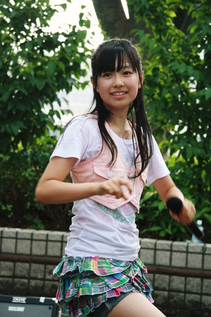

2007年加入星塵傳播
2008年與高城蕾妮、和川ミユウ（和川未優）、高井つき奈、川又智菜美（弓川留奈）成為桃色幸運草誕生前選拔成員之一：0期成員
2008年與玉井詩織加入星塵團體【piecees】，短時間與桃色幸運草同時兼任
2008年5月17日桃色幸運草誕生，桃色幸運草最初期成員，於【神奈川．川崎アゼリア】活動【スターダスト芸能3部新人発掘オーディション】登場
2008年12月29日於【東京．原宿アストロホール】演唱活動【3-B Jr. LIVE『年末だヨ！全員集合』】確認與和川ミユウ（和川未優）、藤白すみれ從桃色幸運草離隊
【TBS「涙のアンパンマン．マーチ」「Y氏の隣人」「空への手紙」「ラーメン屋 源ちゃんの 人情事件簿 札幌．ススキノ殺人事件」】【日本テレビ「D × D」「外科医．有森冴子」】【フジテレビ「成田離婚」「児童虐待調査官 百瀬なつきの事件ファイル」】【テレビ朝日「てっぺん」「はみだし刑事情熱系」】
【衛星劇場「オモヒノタマ 念珠」】【東海テレビ「花衣夢衣」】
【JA共済】【NPフィルム】【日清オイリオ】【SEGA】【紀文食品】【Panasonic】【Benesse】【TOYOTA】【ハウス食品】【麥當勞】【みてネッと】【MUHI】【スクール21】【ポプラディアネット】【光文書院】【学校法人須磨学園】【東京個別指導学院】【矢部プロカッティング】【syn Sophia】
【NHK Eテレ「いないいないばあっ！」「ひとりでできるもん！」「天才てれびくん」】
【Prolog】【ピュアピュア】【UTB】【Kindai】【B.L.T.】【BUBKA】
【17すまいる】